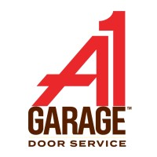

UX & Research
Qualitative and quantitative research to uncover friction points and opportunity areas.
Experience with major brands like

End-to-end CRO skills: research, experimentation, optimization, and scaling — backed by data and real user insights.
Qualitative and quantitative research to uncover friction points and opportunity areas.
Robust A/B testing and deployment to validate winning changes.
Audience-specific experience building to pursue targeted customers
Actionable insights and a roadmap for scaled growth across channels.
I follow a rapid, measurable framework: discover → hypothesize → test → learn → repeat. Each sprint delivers validated learnings.
A few examples of the outcomes we've driven for clients.
Strategic product intent capture improvements used to set proper expectations and enhance checkout experience
Read more →Modified Home Hero content to appeal to UHOne's ideal customer profile
Read more →Data-driven CRO and marketing expert with past experience in conversion rate optimization, strategy, analytics, tagging, website personalization and even paid media (Programmatic native display & affiliate) Obsessed with measurable results building long-term growth systems.